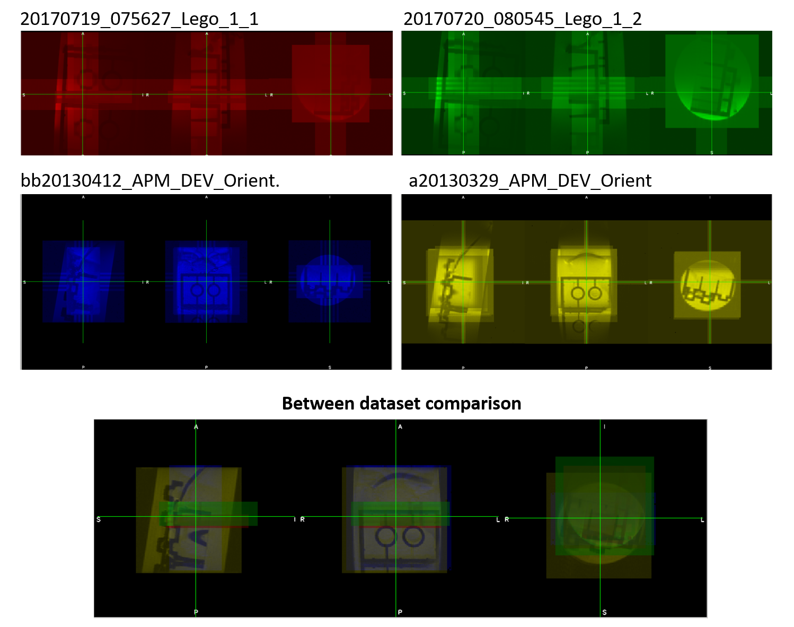

BrkRaw: A comprehensive tool to access raw Bruker Biospin data
Version: 0.3.3
Description
The ‘BrkRaw’ is a python module designed to provide a comprehensive tool to access raw data acquired from Bruker Biospin preclinical MRI scanner. This module is also compatible with the zip compressed data to enable use of the archived data directly.
The module is comprised of four components, including graphical user interface (GUI), command-line tools, high-level and low-level python APIs.
- For the GUI, we focused on improving convenience for checking metadata and previewing the reconstructed image.
- For the command-line tool, we focused on providing tools for converting, organizing, archiving, and managing data. The command-line tool also provides easy-to-use function to convert large set of raw data into organized structure according to BIDS.
- For the high-level python API, we focused on enhancing the accessibility of reconstructed image data with preserved image orientation and metadata for the image analysis. It compatible users’ convenient objects type (nibabel or SimpleITK) without the conversion step.
- For the low-level python API, we focused on providing a consistent method to access raw Bruker data including parameter and binary files with the python compatible datatype while keeping the sake of simplicity.
Conversion reliability
 We’ve tested our converter using the sample dataset from Bruker2Nifti_QA and the results showed correct geometry and orientation for all datasets. We are still looking for more datasets showing orientation issue, if you have any shareable dataset, please contact the developer.